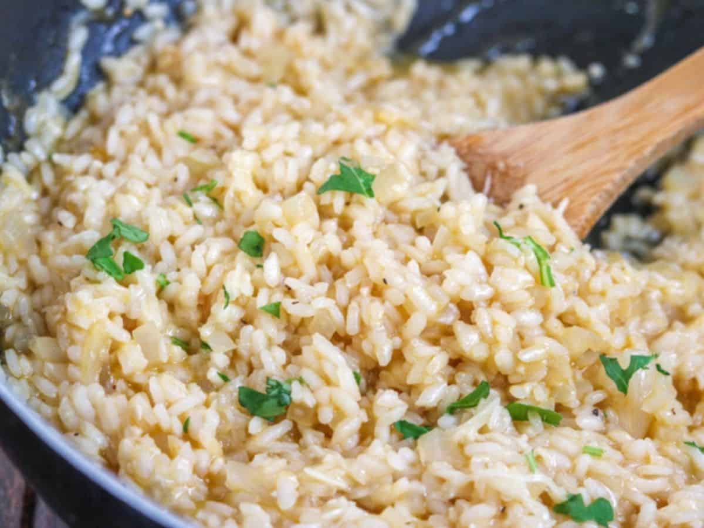

Garlic Risotto Recipe

Description!
Risotto is a staple method of cooking rice in Italy. It's basically rice cooked with stock
or broth until creamy. Sounds simple enough, however, the flavor will knock your socks off.
The stock can be whichever you desire; meat, seafood or even vegetarian. While it requires some attention,
this risotto recipe should be super simple for anyone that wishes to replicate it.
Ingredients!
- Onions (finely diced)
- Garlic (finely diced)
- Olive oil
- Salted butter
- Vegetable stock
- Dry white wine (or whatever wine you enjoy!)
- Arborio rice (or the rice you have at hand)
- Parmesan (remember to shred!)
- Parsley
Steps!
- Lets start by heating the stock and making sure it stays warm
- Add butter and oil to a large skillet over medium heat
- Add the onions and cook until a bit tender
- Add rice and stir around to coat as much as possible with the oil
- Add the wine and stir until it has absorbed into the rice
- Add a full lade of stock and cook while stirring
- Keep stirring! You have to keep stirring!
- Continue stirring and adding until you've used most of the stock
- Add the last ladle of broth and your parsley
- Let the broth absorb halfway and then add your cheese
- Serve! Add as much cheese as you'd like.
More recipes!
Thank you so much for cooking with us! Click right underneath for more delicious recipes!
"Odin Recipes" main page